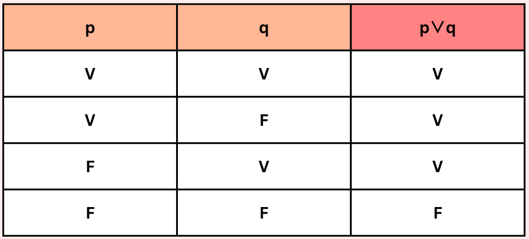
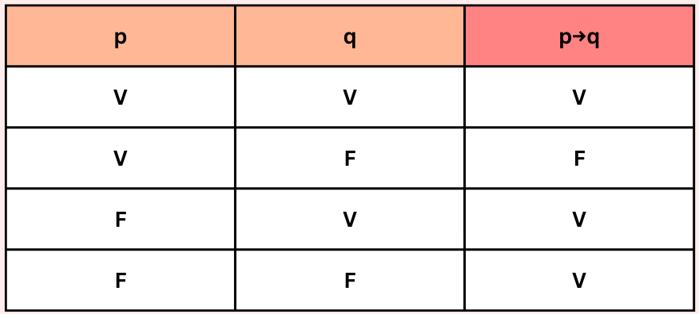
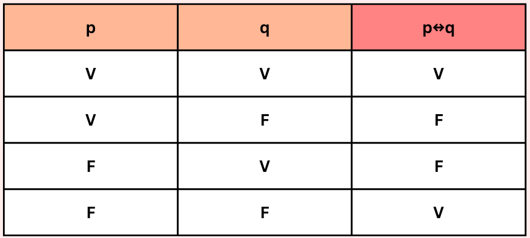

Tablas de verdad
Creada por: Nereyda Celestina Pérez González.
Fecha: 03 de Noviembre del 2023.
Definición
Las tablas de verdad son aquellas tablas matemáticas que se encargan de representar gráficamente ciertos valores o situaciones. Dependiendo de la composición de la validez de estos mismos, se determina si el resultado final de ese escenario será verdadero o falso.
Clasificación
Al obtener todos los resultados en las tablas de verdad, existen tres maneras posibles de clasificarlas, las cuales son:
- Tautología: Siempre verdadero.
- Contradicción: Siempre falso.
- Contingencia: Depende de las circunstancias.
Simbología
Para poder hacer una representación correcta de las tablas de verdad, es necesario que sepamos que, al ser una representación gráfica, contaremos con simbología.
| Nombre de conectiva | Simbolización | Más usado | Traducción al lenguaje natural |
|---|---|---|---|
| Negación | ¬ ~ | ~ | No, no ocurre, que no sucede que |
| Conjunción | ∧ ▪ | ∧ | Y |
| Disyunción | ∨ | ∨ | O |
| Condicional | ⊃ → | → | "si... entonces" |
| Bicondicional | ≡ ↔ | ↔ | "si y sólo si" |
Proposiciones
Las proposiciones son conocidas como enunciados, y son todas aquellas oraciones que pueden ser falsas o verdaderas, pero no ambas a la vez. Para que una proposición sea válida, estas deben ser capaces de tomar un valor de falso o verdadero.
Por
ejemplo:
p: La Tierra es plana
q: -17+38=21
Tipos
Existen 5 tipos de tablas de verdad, los cuales son:
- Negación

- Conjunción
- Disyunción

- Condicional

- Bicondicional

Aplicaciones
Son útiles en varias áreas, como en:
- Lógica: Evaluar validez y simplificar expresiones lógicas.
- Electrónica: Diseñar y analizar circuitos lógicos.
- Informática: Diseñar algoritmos y verificar software.
- Criptografía: Evaluar seguridad de sistemas de cifrado.
- Procesamiento de datos: Filtrar y procesar información.
- Teoría de conjuntos: Representar relaciones entre conjuntos.
- Inteligencia artificial: Definir reglas en sistemas de IA.
- Toma de decisiones: Modelar y analizar escenarios.
Ejemplos
- Tabla de verdad de la proposición: ~(p ∨ q) ↔ (~ p ∧ ~ q)

La expresión ~(p ∨ q) ↔ (~ p ∧ ~ q) es una Tautología.
- Tabla de verdad de la proposición: [(p ∨ q) → (~ r ∧ q)] → (q ↔ r)

La expresión [(p ∨ q) → (~ r ∧ q)] → (q ↔ r) es una Contingencia.
- Tabla de verdad de la proposición: (p → q) ↔ (~ p ∨ q)

La expresión (p → q) ↔ (~ p ∨ q) es una Tautología.
- Tabla de verdad de la proposición: [(p → q) ∨ (~ q ∧ r)] ↔ (r → q)

La expresión [(p → q) ∨ (~ q ∧ r)] ↔ (r → q) es una Contingencia.